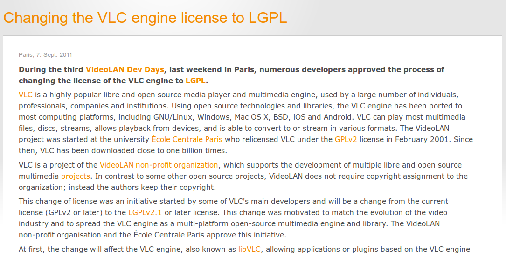
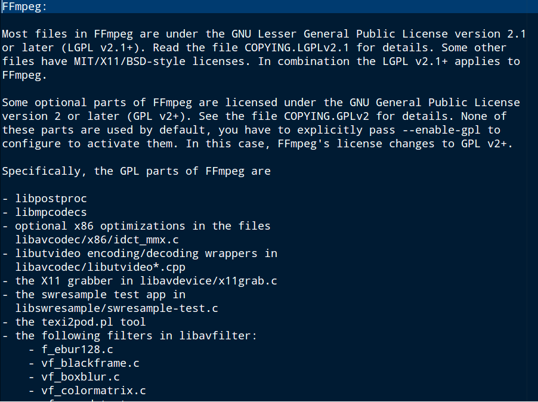
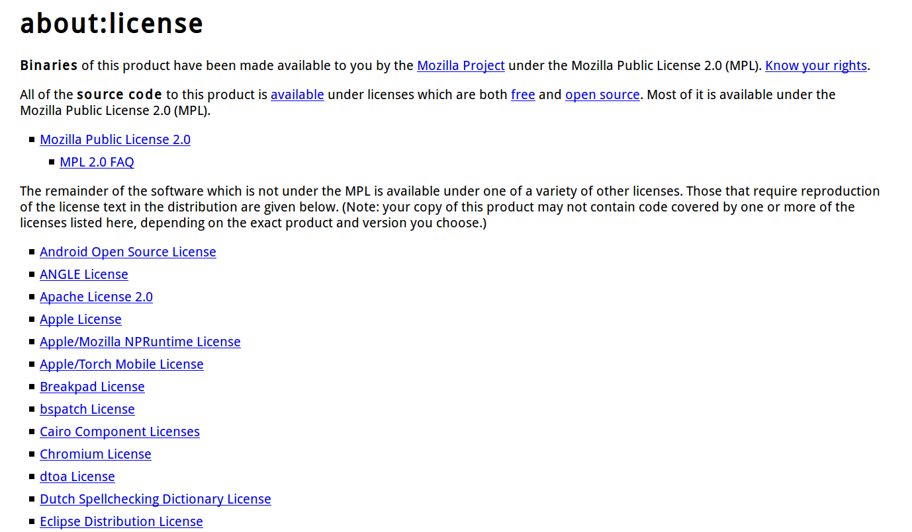

感謝您對「自由軟體鑄造場」的支持與愛護，十多年來「自由軟體鑄造場」受中央研究院支持，並在資訊科學研究所以及資訊科技創新研究中心執行，現已完成階段性的任務。 本網站預計持續維運至 2021年底，網站內容基本上不會再更動。
也紀念我們永遠的朋友 李士傑先生（Shih-Chieh Ilya Li）。
也紀念我們永遠的朋友 李士傑先生（Shih-Chieh Ilya Li）。
淺析自由開源軟體專案與其個別元件授權條款之差異
建立日期 2013-10-28 19:38 最近更新在 2013-11-28 10:00
有經驗的開發者在利用自由開源軟體時，會主動了解軟體專案所適用的授權條款，以遵守授權義務規定的方式來應用自由開源軟體。但是，不少開發者可能容易忽略的是，有些自由開源軟體專案裡，還可能包含或附帶與主專案框架不同授權條款的元件，若是應用專案的方式涉及到這些元件的話，便可能會在實際應用上產生完全不同的效果。【個案實例】
1、關鍵引擎採用 LGPL-2.1 授權的 GPL-2.0 專案：VLC
這幾年很受到歡迎的多媒體播放器與其框架專案VLC，就是一個很顯著的例子。VLC專案整體採用 GPL-2.0 授權，但是為了讓 VLC 可以持續地被應用在 Linux、Windows、Mac OS X、Android 等不同平台上，該專案的開發者在 2011 年決定，要將 VLC 的關鍵引擎改用 LGPL-2.1 來重新授權（註一），這是因為 LGPL-2.1 對於函式庫的利用方式有著較為彈性的規定，使用者只要在合於授權規定的方式內，透過函式庫既定的介面來與其互動存取資料，則新開發出來的軟體，就可以適用非 LGPL-2.1 條款的方式來授權散布，甚至必要時也有機會採取封閉源碼的方式來授權新軟體。因此當開發者僅利用到 LGPL-2.1 函式庫或程式碼的話，就有著根據 LGPL-2.1 授權規定來開發私有軟體 (proprietary software) 的彈性空間（註二），但若是開發者確實是利用到整個 VLC 專案的程式碼，包括 LGPL-2.1 授權的函式庫，以及 GPL-2.0 的播放框架時，便可能必須一體遵守 GPL-2.0 的規定，因此時 GPL-2.0 授權的程式碼，也一併經引用而成為後續衍生專案不可分割的一部份了。

▲ 圖1：VLC 在 2011 年 12 月 7 日發佈的新聞稿中說明，核心引擎已經改為 LGPL-2.1 授權（註三）。
2、透過 GPL-2.0+ 程式碼最佳化部份功能的 LGPL-2.1 專案：FFmpeg
FFmpeg 是個結合多媒體框架與播放解碼器 (codec) 的軟體專案，專案整體採用 LGPL-2.1 及其後版本授權 (LGPL-2.1+)，但是 FFmpeg 在原本標準的預設功能與程式碼之外，還額外提供了可以最佳化部份播放功能的程式碼，但與專案的主要框架不同，這些具有最佳化功能的程式碼是採用 GPL-2.0 及其後版本來授權的 (GPL-2.0+)。因此當開發者利用 FFmpeg 專案的程式碼來開發新軟體時，若是利用到 FFmpeg 的部份僅有其標準預設功能程式碼，新開發出來軟體的授權條款便可以只要考慮 LGPL-2.1 授權方式的拘束性，與利用到同採 LGPL-2.1 的 VLC 核心引擎函式庫一樣，透過既定介面來與其互動者，不需要受到 LGPL-2.1 授權的拘束，不過若是後續開發者，選擇啟動這些以 GPL-2.0 授權的額外程式碼來最佳化 FFmpeg 的衍生專案，就有可能讓整個衍生專案轉為 GPL-2.0+ 授權，影響所及，可能會讓整個新軟體成為 FFmpeg 的衍生程式，新軟體也因此可能必須要採用 GPL-2.0 來授權散布（註四）。

▲ 圖2：FFmpeg v. 2.0.2 中的 LICENSE 純文字檔，羅列了所有採用 GPL-2.0+ 授權的源碼檔案。
3、融合許多 BSD 類授權條款的 MPL-2.0 專案：Mozilla Firefox
Mozilla Firefox（簡稱 Firefox）這款著名的自由開源瀏覽器，整體是採用 MPL-2.0 條款來授權散布，但是若查閱附隨在 Firefox 中的授權資訊時，可以看到許多非 MPL-2.0 授權的程式碼也包含在瀏覽器中，而這些個別元件、檔案的授權條款，幾乎都是屬於義務性規定較為寬鬆的 BSD 類條款（註五）。
之所以有這樣現象存在，是因為 MPL-2.0 的授權特性介於 GPL 跟 BSD 之間：原則上，後續開發者修改 MPL-2.0 軟體所產生的衍生檔案，仍然必須採用 MPL-2.0 來授權，但若是一個獨立檔案裡，並未包含任何 MPL-2.0 授權的程式碼，那麼這個檔案就可以採用非 MPL-2.0 的條款來授權，只要其授權條款的具體內容，不會與 MPL-2.0 產生衝突即可。而由於 BSD 類的授權條款並不會與 MPL-2.0 產生衝突，所以我們才會在 Firefox 專案中看到許多 BSD 類條款授權的個別元件與檔案存在其中（註六）。也因此，當開發者擷取 Firefox 程式碼來開發新軟體時，若擷取的剛好僅是這些 BSD 類條款授權的源碼檔案時，那麼在應用上只需要遵守這些 BSD 類條款的授權規定即可，而毋須一體受到 MPL-2.0 所拘束。

▲ 圖3：Firefox v. 18.0 中的授權資訊頁面，說明 Firefox 包含非 MPL-2.0 授權的元件，這些元件所適用的授權條款數量多達將近 60 款。
【特定授權條款間可以彼此相容】
一個自由開源軟體專案中，之所以能夠存在著不同條款授權的元件，最基本的原因就是在於特定授權條款彼此間可以有相容的機制。這些相容的方式主要分為蛇吞象與牛鷺居兩種型態（註七）。
1、蛇吞象：嚴格包裹寬鬆的授權相容型態
上述 VLC 專案的狀況，就是屬於這種授權相容型態，因為 GPL-2.0 是一份規定相對比較嚴格的授權條款，而 LGPL-2.1 則是相對寬鬆的授權條款，此外，LGPL-2.1 的授權內容與 GPL-2.0 非常相近，並沒有衝突或不相容之處，再加上 LGPL-2.1 與 GPL-2.0 這二份授權條款，本就是有單行道式的轉換關係，所以散布者若是認為必要，隨時可以將 LGPL-2.1 授權的函式庫，改為 GPL-2.0 的授權型態向後散布，因此 VLC 的函式庫與程式碼可以透過 LGPL-2.1 獨立授權散布，卻也可以同時被包裹在 GPL-2.0 的專案中，整體以 GPL-2.0 來對外授權散布。
這種的授權相容的型態，類似法國著名小說「小王子（註八）」裡所描述的情節，一條蟒蛇雖然吞了一整隻的大象，但是他人從外觀上，只能看到蟒蛇的外在形體，卻無法得知蟒蛇腹中存在著一隻大象的內在事實，相對地，寬鬆的 LGPL-2.1 函式庫被包裹在相對嚴格的 GPL-2.0 專案中，除非像 VLC 專案一樣有明確的授權說明文字，否則一般人很難清楚得知一個 GPL-2.0 授權的軟體專案中，存在著以 LGPL-2.1 等較寬鬆條款授權的函式庫與程式碼。
根據這樣的邏輯，只要一份條款的授權內容相對嚴格，另外一份條款的授權內容相對寬鬆，兩份條款的授權內容也不相衝突，寬鬆條款授權的程式碼，就有機會以原始的授權狀態，被包含在嚴格條款授權的專案之中，而使用者對於整體專案來做觀察，只會大致看到那個較為嚴格的授權方式。舉例來說，除了 GPL-2.0 專案可以包含 LGPL-2.1 授權的函式庫之外，像 BSD、MIT 這類義務性規定寬鬆的授權條款，大都可以被其他相對嚴格的授權提款所包覆，因此 LGPL-2.1 專案可以包含 BSD-3-clasue 元件，而在 GPL-2.0 授權的專案中也可以利用 MIT 授權的元件。
不過，相同的邏輯應用在 FFmpeg 專案的例子中，可能會有人感到疑惑：FFmpeg 中包含有 GPL-2.0 授權的程式碼，可是整體專案為何在聲明上，表彰其是以 LGPL-2.1 進行授權散布，而不是 GPL-2.0 呢？這是因為這些具有最佳化功能的額外元件，原則上並不屬於 FFmpeg 專案預設程式碼的一部份，這些 GPL-2.0 授權元件，可說是 FFmpeg 專案另外提供的強化功能。因此若開發者在沒有進行任何調整或啟動額外功能的狀況下，來直接應用 FFmpeg，這時候的 FFmpeg 專案程式碼仍然都是 LGPL-2.1 授權的，據此所開發出來的新軟體也因此保有適用非 LGPL-2.1 條款授權的彈性空間，然而，若開發者在後續應用上，啟動這些 GPL-2.0 授權元件，來最佳化 FFmpeg 的功能，便有機會讓整個 FFmpeg 後續的衍生專案，轉為 GPL-2.0 授權，這便導致新軟體必須適用 GPL-2.0 來授權散布。
2、牛鷺居：不同授權條款同時並存的相容型態
Firefox 專案就是屬於這種授權相容的型態，如同之前說明過的，MPL-2.0 條款本身就具有包容其他授權條款的特性，所以只要一份條款的授權規定不與 MPL-2.0 產生衝突，那麼就可以用來授權未包含 MPL-2.0 程式碼的檔案，而存在於 MPL-2.0 授權的專案中。
在這種授權相容的態樣中，可以看到許多不同的授權條款存在於一個軟體專案中，這些條款不會包覆對方，而是彼此獨立，所以只要條款內容本身不會彼此干擾，即使二個不同元件、檔案的授權內容南轅北轍，也可以沒有問題地存在於一個軟體專案中，甚至不提供源碼的私有軟體授權條款，也可以存在於這類的相容型態裡。這種授權型態的寬廣包容，為軟體專案本身、也為其中個別元件帶來更多應用與發展的機會，就如同水牛龐大的身驅提供牛背鷺避免被天敵攻擊的屏障，而牛背鷺會啄食水牛身上的寄生蟲一樣，是彼此存在互利，但又不彼此侵犯的共生狀態。
會形成這類相容型態的授權條款，除了 MPL-2.0、CDDL-1.0 之外，還包括了 BSD、MIT 以及 Apache-2.0 等義務規定相對寬鬆的 BSD 類授權條款。此外， LGPL-2.1 由於對於函式庫有著彈性的寬鬆規定，因此在符合其授權規則的利用方式下，LGPL-2.1 也是可以與許多其他授權條款共生在同一個軟體專案中。
【所應用到元件的授權條款為判斷重點】
以上的說明要點，在於讓大家了解到，當利用自由開源專案開發新軟體的時候，了解專案整體授權模式雖然是重要的一環，但實際所擷取、應用到的個別元件，其授權態樣也必須要進一步去了解與掌握，尤其當開發者並非直接應用專案整體程式碼，而是擷取部份元件或者開啟額外功能來利用的時候，就必須要注意個別元件授權內容所帶來的影響，如此才可以遵守正確的授權規定，又或者不會遺漏掉寬鬆授權條款所帶來的彈性運用空間。
不過，筆者在此也提醒，本文所舉的三個實例，皆是有著清楚說明的開發專案，在實務上，有些專案並沒有特別說明或者特別標示這種元件授權差異的狀況，而僅是在下層元件目錄中或檔頭說明文字裡面，才有相關的標示與說明，因此在實際應用上，若是在專案整體的說明中沒有看到相關資訊的話，建議可以去查閱元件所在的源碼目錄層或個別檔案的檔頭說明文字，是否有授權相關的資訊，以清楚了解該元件的授權條款，並以正確的方式來應用自由開源軟體專案，與其中夾附的個別元件。
----
註一：這種改變專案授權方式的過程，就是所謂的「重新授權 (re-license)」。關於重新授權的詳細說明請參見：葛冬梅、林誠夏，自由軟體專案授權方式的轉換（下）：新版本號另以更改後的授權方式釋出，https://www.openfoundry.org/tw/legal-column-list/8219-2010-12-24-16-47-06。
註二：VLC專案的授權資訊請見：https://www.videolan.org/legal.html，https://www.videolan.org/press/2007-1.html；許多專案開發者在 2011 年的 VideoLAN Dev Days 2011 中同意將核心引擎中的函式庫改為 LGPL-2.1，相關新聞稿請見：https://www.videolan.org/press/lgpl.html，https://www.videolan.org/press/lgpl-libvlc.html。
註三：新聞稿網址：https://www.videolan.org/press/lgpl.html。
註四：FFmpeg 的授權說明請參見：https://www.ffmpeg.org/legal.html。
註五：屬於 BSD 類的授權條款請見：https://www.openfoundry.org/tw/foss-license-category。
註六：Firefox 瀏覽器的著作權人為 Mozilla Foundation（簡稱 Mozilla 基金會），Mozilla 基金會對於轄下的自由開源軟體專案有著統一的授權政策，內容請參閱：https://www.mozilla.org/MPL/license-policy.html。這個授權政策頁面顯示，與 MPL-2.0 相容的授權模式包括了：(1) CC0 (Creative Commons Zero)；(2) 不受到著作權保護的公共財軟體 (Other Public Domain dedications)；(3) MIT與新款 BSD； (4) 類似 MIT/BSD 這類義務規定叫為寬鬆的其他條款；(5) Apache-2.0 ；(6) 以及 GPL/MPL 雙重授權模式。此外，在可以區分清楚且採用動態連結的利用方式下，LGPL-2.1 及其之前版本授權的元件，也是可以應用到 Firefox 專案中。
註七：關於授權條款相容性的詳細說明，請參閱：林珈宏，從 Copyleft 看自由開源軟體授權相容性，https://www.openfoundry.org/tw/legal-column-list/8710-introducing-license-compatibility-via-copyleft-mechanism。
註八：「小王子（法語：Le Petit Prince；英語：The Little Prince）」小說由法國作家安東尼．聖修伯里（Antoine de Saint-Exupery，又譯「安托萬．德．聖-埃克蘇佩里」）所著，關於這本小說的介紹可以參閱維基百科條目：https://zh.wikipedia.org/wiki/%E5%B0%8F%E7%8E%8B%E5%AD%90。關於蛇吞象的圖片可以參見下列網頁的內容：https://unmomentoplease.blogspot.tw/2011/09/my-favorite-antoine-marie-jean-baptiste.html。
自由軟體鑄造場電子報 : 第 229 期 淺析自由開源軟體專案與其個別元件授權條款之差異
標籤: project, component, license difference, 元件, 授權差異, VLC, FFmpeg, Firefox, 授權相容性, 蛇吞象, 牛鷺居,
分類: 法律專欄
專欄總覽


自由軟體鑄造場 製作 最佳瀏覽狀態：IE7或Firefox2.0以上 (建議使用Firefox) ‧ 解析度1024*768
E-Mail：contact@openfoundry.org Address：台北市南港區研究院路2段128號 中央研究院資訊科學研究所 . 隱私權條款. 使用條款
E-Mail：contact@openfoundry.org Address：台北市南港區研究院路2段128號 中央研究院資訊科學研究所 . 隱私權條款. 使用條款